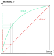
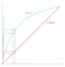

Loading from file#
Now that we are familiar with the representation of geometric data that the GPU expect, we can load it from a file instead of hard-coding it in the source code. This is the occasion to introduce some basic resource management to our project (although this is not specific to WebGPU).
File format#
Example#
The file format I introduce here is not standard, but it is simple enough to parse. Here is the content of webgpu.txt, which I put in a resources/ directory:
[points]
# x y r g b
0.5 0.0 0.0 0.353 0.612
1.0 0.866 0.0 0.353 0.612
0.0 0.866 0.0 0.353 0.612
0.75 0.433 0.0 0.4 0.7
1.25 0.433 0.0 0.4 0.7
1.0 0.866 0.0 0.4 0.7
1.0 0.0 0.0 0.463 0.8
1.25 0.433 0.0 0.463 0.8
0.75 0.433 0.0 0.463 0.8
1.25 0.433 0.0 0.525 0.91
1.375 0.65 0.0 0.525 0.91
1.125 0.65 0.0 0.525 0.91
1.125 0.65 0.0 0.576 1.0
1.375 0.65 0.0 0.576 1.0
1.25 0.866 0.0 0.576 1.0
[indices]
0 1 2
3 4 5
6 7 8
9 10 11
12 13 14
It is basically the content of the pointData and indexData defined previously as C++ vectors, introduced by a line of the form [section name]. Lines that are empty or starting with a # are ignored.
Note
We can already bump up the maximum buffer size limit:
requiredLimits.limits.maxBufferSize = 15 * 5 * sizeof(float);
Parser#
I am not going to detail the parser. I believe it is rather simple to understand, and it is not the core topic of this lecture.
Plus once we’ll start using 3D data we will switch to a more standard format anyways.
#include <filesystem>
#include <fstream>
#include <sstream>
#include <string>
namespace fs = std::filesystem;
bool loadGeometry(const fs::path& path, std::vector<float>& pointData, std::vector<uint16_t>& indexData) {
std::ifstream file(path);
if (!file.is_open()) {
return false;
}
pointData.clear();
indexData.clear();
enum class Section {
None,
Points,
Indices,
};
Section currentSection = Section::None;
float value;
uint16_t index;
std::string line;
while (!file.eof()) {
getline(file, line);
// overcome the `CRLF` problem
if (!line.empty() && line.back() == '\r') {
line.pop_back();
}
if (line == "[points]") {
currentSection = Section::Points;
}
else if (line == "[indices]") {
currentSection = Section::Indices;
}
else if (line[0] == '#' || line.empty()) {
// Do nothing, this is a comment
}
else if (currentSection == Section::Points) {
std::istringstream iss(line);
// Get x, y, r, g, b
for (int i = 0; i < 5; ++i) {
iss >> value;
pointData.push_back(value);
}
}
else if (currentSection == Section::Indices) {
std::istringstream iss(line);
// Get corners #0 #1 and #2
for (int i = 0; i < 3; ++i) {
iss >> index;
indexData.push_back(index);
}
}
}
return true;
}
Loading resources from disc#
Basic approach#
We can replace the definition of the pointData and indexData vectors by a call to our new loadGeometry function.
std::vector<float> pointData;
std::vector<uint16_t> indexData;
bool success = loadGeometry("resources/webgpu.txt", pointData, indexData);
if (!success) {
std::cerr << "Could not load geometry!" << std::endl;
return 1;
}
A problem we have with this hard-coded relative path is that its interpretation depends on the directory from which you run your executable:
my_project> ./build/App
(Working all right)
my_project> cd build
my_project/build> ./App
Could not load geometry!
In the second case, your program tries to open my_project/build/resources/webgpu.txt, which does not exist. There are a few options to address this:
Option A Don’t care, just call your program from the right directory. It could be annoying, and the problem is that IDEs usually run the executable from
build/or even a subdirectory ofbuild/.Option B Use an absolute path. This will only work on your machine, which is quite of a limitation.
Option C Use an absolute path that is automatically generated thanks to CMake. This is what we’ll do.
Option D Use a command line argument to tell the program where to find the resource directory. This is an interesting option, which can be used in combination with Option C, but requires a bit more work.
Option E Automatically copy the resources in the directory from which your IDE launches the program. This will be a problem once we try to modify resources while the program is running (which is quite handy when writing shaders).
Resource path resolution#
We will do something like this:
#define RESOURCE_DIR "/home/me/src/my_project/resources"
loadGeometry(RESOURCE_DIR "/webgpu.txt", pointData, indexData);
Except that the #define RESOURCE_DIR will be added by CMake rather than being explicitly written in our source code!
Note
When putting two string literals next to each others in a C or C++ source code, like in loadGeometry("resource" "/webgpu.txt", …), they are automatically concatenated. This is precisely meant for our use case to work!
To define RESOURCE_DIR in the CMakeLists.txt you can add this after creating the App target:
target_compile_definitions(App PRIVATE
RESOURCE_DIR="${CMAKE_CURRENT_SOURCE_DIR}/resources"
)
The expression ${CMAKE_CURRENT_SOURCE_DIR} is replaced by the content of CMake’s variable CMAKE_CURRENT_SOURCE_DIR, which is a built-in variable containing the full path to the CMakeLists.txt file that you are editing.
{note}
When writing a CMake function, the CMAKE_CURRENT_SOURCE_DIR variable contains the directory of the CMakeLists.txt that is currently calling the function. If you want to refer to the directory of the CMakeLists.txt that defines the function, use CMAKE_CURRENT_LIST_DIR instead.
Portability#
😒 Hey but in the end our executable uses an absolute path, so we have this portability issue when trying to share it, right?
Yes indeed, but we can easily add an option to globally change the resource directory when building a release that we want to be able to distribute:
# We add an option to enable different settings when developing the app than
# when distributing it.
option(DEV_MODE "Set up development helper settings" ON)
if(DEV_MODE)
# In dev mode, we load resources from the source tree, so that when we
# dynamically edit resources (like shaders), these are correctly
# versionned.
target_compile_definitions(App PRIVATE
RESOURCE_DIR="${CMAKE_CURRENT_SOURCE_DIR}/resources"
)
else()
# In release mode, we just load resources relatively to wherever the
# executable is launched from, so that the binary is portable
target_compile_definitions(App PRIVATE
RESOURCE_DIR="./resources"
)
endif()
You can then have 2 different builds of your project in two different directories:
cmake -B build-dev -DDEV_MOD=ON -DCMAKE_BUILD_TYPE=Debug
cmake -B build-release -DDEV_MOD=OFF -DCMAKE_BUILD_TYPE=Release
The first one for comfort of development, the second one for the portability of a release.
Tip
The CMAKE_BUILD_TYPE option is a built-in option of CMake that is very commonly used. Set it to Debug to compile your program with *debugging symbols (see debugging), at the expense of a slower and heavier executable. Set it to Release to have a fast and lightweight executable with no debugging safe-guard.
When using some CMake generators, like the Visual Studio one, this is ignored because the generated solution can switch from Debug to Release mode directly in the IDE instead of asking CMake.
Shaders#
Now that we have a basic resource path resolution mechanism, I strongly suggest we use to load our shader code, instead of hard-coding it in the C++ source as we have been doing from the beginning. We can even include the whole shader module creation call:
ShaderModule loadShaderModule(const fs::path& path, Device device) {
std::ifstream file(path);
if (!file.is_open()) {
return nullptr;
}
file.seekg(0, std::ios::end);
size_t size = file.tellg();
std::string shaderSource(size, ' ');
file.seekg(0);
file.read(shaderSource.data(), size);
ShaderModuleWGSLDescriptor shaderCodeDesc{};
shaderCodeDesc.chain.next = nullptr;
shaderCodeDesc.chain.sType = SType::ShaderModuleWGSLDescriptor;
shaderCodeDesc.code = shaderSource.c_str();
ShaderModuleDescriptor shaderDesc{};
shaderDesc.hintCount = 0;
shaderDesc.hints = nullptr;
shaderDesc.nextInChain = &shaderCodeDesc.chain;
return device.createShaderModule(shaderDesc);
}
WGPUShaderModule loadShaderModule(const fs::path& path, WGPUDevice device) {
std::ifstream file(path);
if (!file.is_open()) {
return nullptr;
}
file.seekg(0, std::ios::end);
size_t size = file.tellg();
std::string shaderSource(size, ' ');
file.seekg(0);
file.read(shaderSource.data(), size);
WGPUShaderModuleWGSLDescriptor shaderCodeDesc{};
shaderCodeDesc.chain.next = nullptr;
shaderCodeDesc.chain.sType = WGPUSType_ShaderModuleWGSLDescriptor;
shaderCodeDesc.code = shaderSource.c_str();
ShaderModuleDescriptor shaderDesc{};
shaderDesc.nextInChain = nullptr;
shaderDesc.hintCount = 0;
shaderDesc.hints = nullptr;
shaderDesc.nextInChain = &shaderCodeDesc.chain;
return wgpuDeviceCreateShaderModule(device, shaderDesc);
}
Move the original content of the shaderSource variable into resources/shader.wgsl and replace the module creation step by:
std::cout << "Creating shader module..." << std::endl;
ShaderModule shaderModule = loadShaderModule(RESOURCE_DIR "/shader.wgsl");
std::cout << "Shader module: " << shaderModule << std::endl;
This way, you no longer need to rebuild the application when you only want to change the shader!
Adjustments#
Transform#
If you run the program now you should get something like this:
Our loaded shape is a bit off, we should move it to better center it!#
So how do we “move” the object? Similarly to how we fixed the ratio issue in the previous chapter, we can do it in the vertex shader, by adding something to the x and y coordinates:
let offset = vec2f(-0.6875, -0.463);
out.position = vec4f(in.position.x + offset.x, (in.position.y + offset.y) * ratio, 0.0, 1.0);
Note
It is important to apply the scene transform before the viewport transform (the ratio). We will get back on this more in detail when adding the 3D to 2D projection transform needed for drawing 3D meshes!
The WebGPU Logo loaded from the file, with wrong colors.#
Color issue#
You are not just being picky, there is indeed something wrong with the colors! Compare to the logo in the left panel, the colors in the window seem lighter, and even have a different tint.
Note
This behavior depends on your device, so you may actually see correct colors. I recommend you read the following anyways though!
🙄 Hum maybe you made a mistake when writing the file you provided.
Nice try, but nope. To convince you let’s take a look at the color of the first 3 lines of the file, which correspond to the biggest triangle:
0.0 0.353 0.612
These are red, green and blue values expressed in the range \((0,1)\) but let’s remap them to the integer range \([0,255]\) (8-bit per channel) which is what your screen most likely displays (and hence what usual image file format store):
0 90 156
Now we can check on a screen capture the color of the big triangle:
Color picking the big triangle in a screenshot of our windows shows a color of \((0, 160, 205)\).#
Oh oh, it does not match. What is happening? We have a color space issue, meaning that we are expressing colors in a given space, but they end up being interpreted differently. This may happen in a lot of contexts, so it is quite useful to be aware of the basics (although color science is a non-trivial matter in general).
Our problem here comes from the swapChainFormat. Let us print it:
std::cout << "Swapchain format: " << swapChainFormat << std::endl;
This gives Swapchain format: 24. The “24” must be compared to the values of the WGPUTextureFormat enum in webgpu.h. Be aware that values there are expressed in base 16 (number literals start with 0x), so we are looking for 24 = 1 * 16 + 8 = 0x18.
Note
To avoid the need to manually handle enum values, I recommend to have a look at magic_enum. After you copy this file to your source tree you can simply do the following:
#include "magic_enum.hpp"
// [...]
std::cout << "Swapchain format: " << magic_enum::enum_name<WGPUTextureFormat>(swapChainFormat) << std::endl;
Thanks to advanced C++ template mechanism, this library is able to output Swapchain format: WGPUTextureFormat_BGRA8UnormSrgb!
Dawn
Since the Dawn implementation only supports the format BGRA8Unorm for the surface, you should directly see correct colors in that case.
In my setup, the preferred format is BGRA8UnormSrgb:
The
BGRApart means that colors are encoded with the blue channel first, then the green one, then red and alpha.The
8means that each channel is encoded using 8 bits (256 possible values).The
Unormpart means that it is exposed as an unsigned normalized value, so we manipulate floats (well, fixed-point reals actually, not floating-point) in the range \((0,1)\) even if the underlying representation only uses 8-bits.Snormwould be in range \((-1,1)\),Uintin integer range \([0,255]\), etc.And finally, the
Srgbpart tells that values use the sRGB scale.
The sRGB color space#
The idea of a color space is to answer the following problem: We have a budget of 256 possible values to represent a color channel, how should these 256 discrete values (index \(i\)) be distributed along the continuous range of light intensity \(x\)?
The most intuitive approach, the linear one, consists in regularly distributing the 256 indices across the range of intensities. But we may need more precision in some parts of the range and less in others. Also, the physical response of your screen is typically not linear! Even your eyes don’t have a linear response when translating physical stimuli into psychological perception (and it depends on the surrounding lighting).
Note
The sRGB color space has been designed specifically to address the non-linearity of the display. On CRT displays, this was in line with the spontaneous response behavior of the physical device. Now we have switched to LCD or OLED display so the physical device has a different behavior, but screen manufacturer artificially reproduce the CRT response curve to ensure backward compatibility.
Important
The sRGB color space is so much the standard that it is the one used by all common image file formats, like PNG and JPG. As a consequence, when not doing any color conversion, everything we do, including the color picking tool, is in sRGB.
However, WebGPU assumes that the colors output by the fragment shader are linear, so when setting the surface format to BGRA8UnormSrgb it performs a linear to sRGB conversion. This is what causes our colors to be wrong!
Gamma correction#
An easy-fix is to force a non-sRGB texture format:
TextureFormat swapChainFormat = TextureFormat::BGRA8Unorm;
But ignoring the preferred format of the target surface may result in performance issues (the driver would need to convert formats all the time). Instead, we will handle the color space conversion in the fragment shader. A good approximation of the rRGB conversion is \(R_{\text{linear}} = R_{\text{sRGB}}^{2.2}\):
// We apply a gamma-correction to the color
// We need to convert our input sRGB color into linear before the target
// surface converts it back to sRGB.
let linear_color = pow(in.color, vec3f(2.2));
return vec4f(linear_color, 1.0);
The WebGPU Logo with gamma-corrected colors.#
Perfect! We fixed the problem, and we can even check with the color picker:
Now color picking shows the right value (almost, our gamma curve is an approximation).#
This conversion from linear to non-linear color scale (or the other way around) is called gamma correction or tone mapping. Here it was for rather technical consideration, but it is common to add an artistically driven tone mapping operation at the end of a 3D rendering pipeline. And the fragment shader is the right place to do so.
Note
In general a color space is characterized by a gamut and a gamma. The gamma is this non-linearity of the discrete scale of values, and the gamut is the range of intensities that we want to cover (the vertical axis above, generalized to 3 colors). The gamut is often given by 3 primaries.
Tip
There is more generally a lot to get lost about with color spaces, don’t try to learn it all at once but I personally find it fascinating!
Conclusion#
Loading geometric data from a file was an apparently simple change, but it was actually a good way to introduce multiple concerns that can easily become a nightmare if we don’t pay attention to them:
Resource path resolution
File format
Color space and more generally data encoding
Transform (ratio, position)
We are going to come back on these from time to time to refine them. We are now ready to move on to a way to avoid hard-coded values in the shader and add a lot of flexibility, namely uniforms.